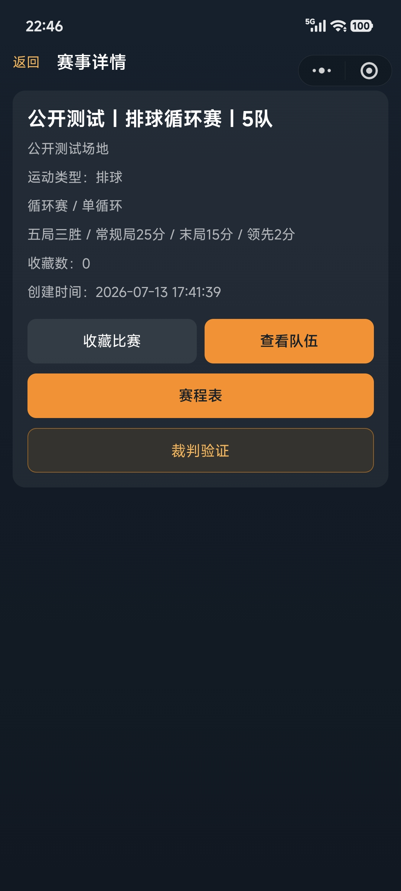
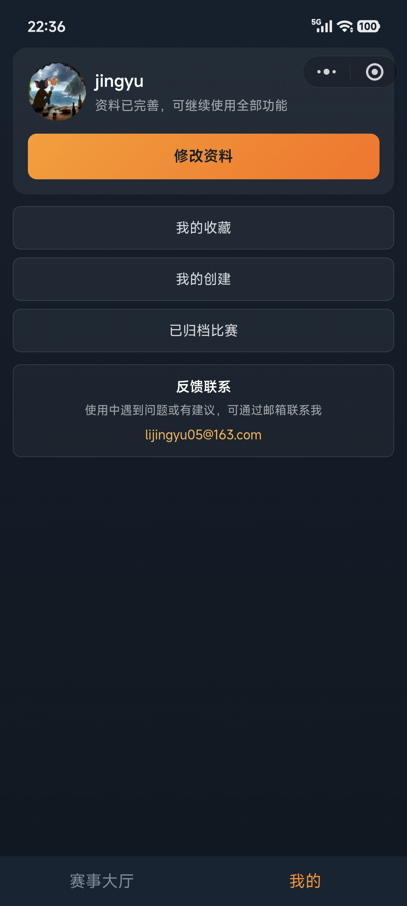

赛事创建者
负责赛事规则、参赛名单、裁判密码、归档等管理动作。创建者天然拥有该赛事下所有比赛的操作权限。
- 创建羽毛球或排球赛事
- 选择赛制和规则
- 设置裁判密码并管理授权
- 赛事结束后归档
通用能力
创建者和裁判进入系统后，主要围绕赛事展开工作：创建赛事、查看赛程、进入记分、授权裁判、赛后归档。
通用能力不依赖具体运动类型，是羽毛球和排球共同使用的基础链路。
负责赛事规则、参赛名单、裁判密码、归档等管理动作。创建者天然拥有该赛事下所有比赛的操作权限。
通过赛事裁判密码验证后，裁判可以进入记分、阵容编排和结算页面。授权作用于整个赛事。
这些页面是创建者和裁判最常进入的通用入口。



裁判通过某个赛事的密码验证后，可以操作该赛事下的比赛，不是只授权某一场。
归档不会删除数据，但会让比赛写操作失效，适合赛后沉淀。